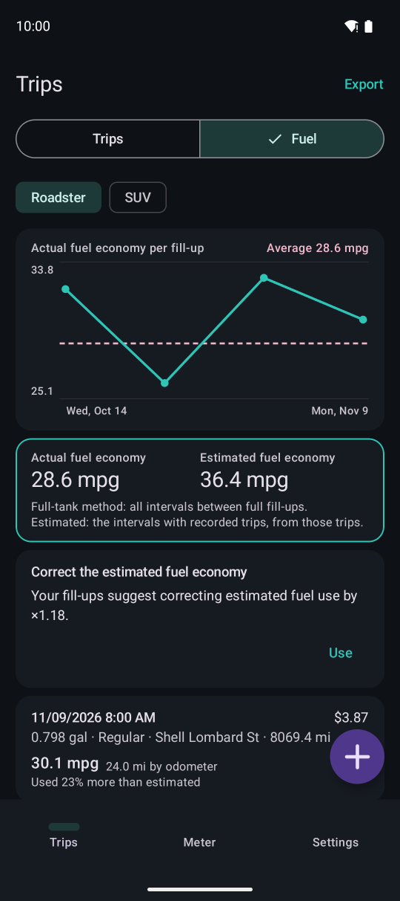
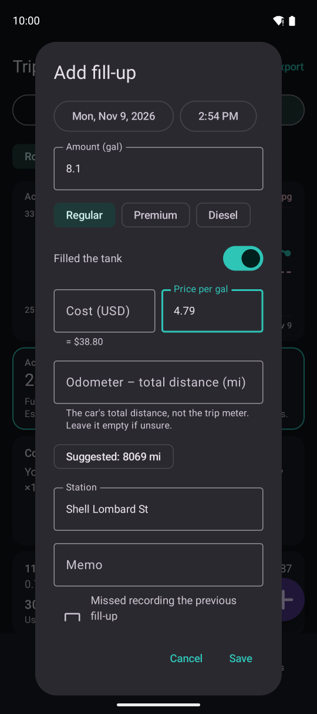

Fuel log
Log your fill-ups to see your actual fuel economy between full tanks, how it compares with the estimate, and to correct the estimate.

1234567“Fuel” at the top of Trips.
- 1Switch vehicles
- 2Actual fuel economy for each fill-up, and the average (dashed)
- 3Overall actual and estimated fuel economy
- 4Suggested correction of the estimate
- 5A fill-up. Full fill-ups show the actual fuel economy for the interval and the difference from the estimate
- 6Add a fill-up
- 7Export as CSV
Adding a fill-up

1234567- 1Date and time (can be in the past)
- 2Amount
- 3Fuel grade (the same as last time is preselected)
- 4Whether you filled the tank
- 5Cost and price (enter two of amount, cost and price; the third is calculated)
- 6The car's total distance (odometer). Last value plus recorded distance is suggested
- 7Station. Names you entered before are suggested
Further down are a memo and “Missed recording the previous fill-up”. If a fill-up was missed, no fuel economy is shown for that interval.
Actual fuel economy and correction
- Actual fuel economy uses the full-tank method: distance from one full tank to the next ÷ fuel added in between
- The distance is the odometer difference if you entered it, otherwise the distance of the trips recorded in between
- Difference from the estimate: compares the estimated fuel of the trips recorded in the interval with the fuel actually added
- A correction is suggested from intervals (up to the last 3) where you entered the odometer and recorded at least 90% of that distance
- Tap “Use” to apply the factor to that vehicle's estimated fuel economy everywhere (trips, meter, mini window, replay, exports). Your recorded data is unchanged and you can stop at any time
- Using the correction is a Premium feature. Logging fill-ups, actual fuel economy and the comparison are free